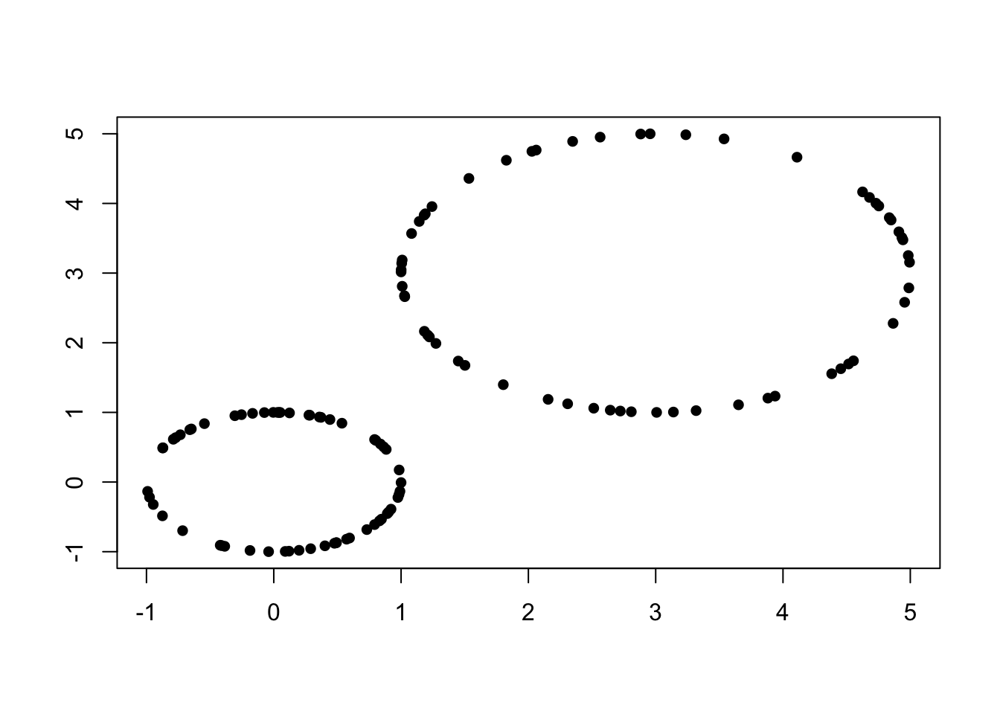
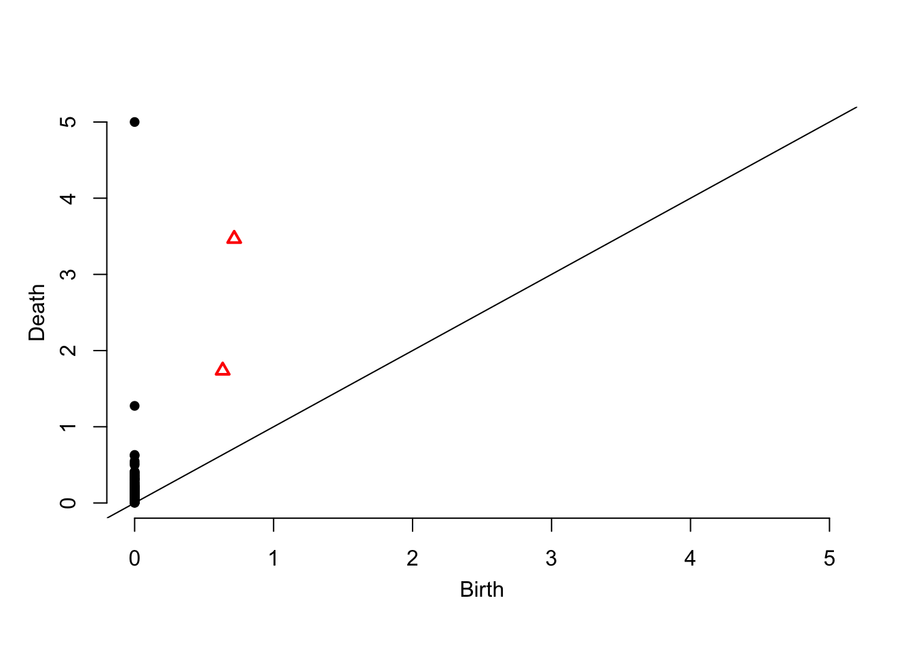
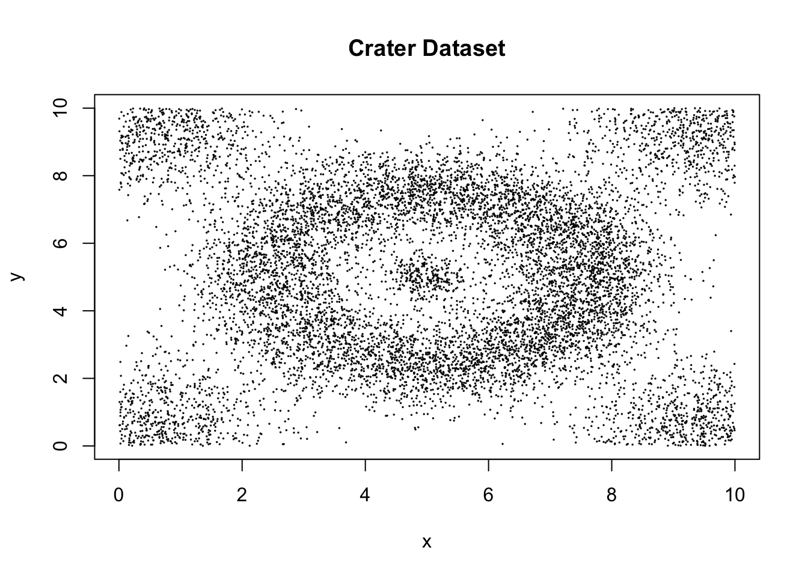
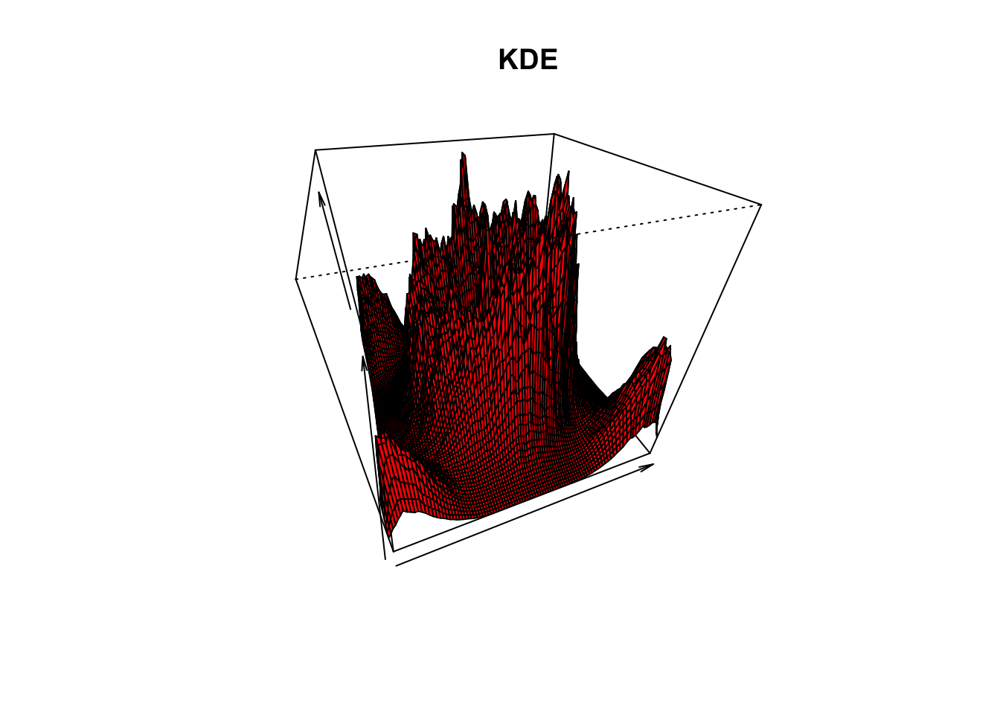

library(ggplot2, warn.conflicts = FALSE)This RMarkdown file accompanies the paper “Using persistent homology and dynamical distances to analyze protein binding” by Kovacev-Nikolic et al. It is meant as an exploration of topological data analysis and its application to datasets.
library(TDA)circle.1 <- circleUnif(60)
circle.2 <- circleUnif(60, r = 2) + 3
circles <- rbind(circle.1, circle.2)
plot(circles, pch = 16, xlab = "",ylab = "")
max_dimension <- 1
max_scale <- 5diag <- ripsDiag(X = circles, max_dimension, max_scale, library = "GUDHI", printProgress = FALSE)
summary(diag[['diagram']])## Call:
## ripsDiag(X = circles, maxdimension = max_dimension, maxscale = max_scale,
## library = "GUDHI", printProgress = FALSE)
##
## Number of features:
## [1] 122
##
## Max dimension:
## [1] 1
##
## Scale:
## [1] 0 5plot(diag[['diagram']])
crater <- read.table("./data/craters.txt")
plot(crater, cex = 0.1, main = "Crater Dataset", xlab = "x", ylab = "y")
coord_seq <- seq(0, 10, by = 0.1)
crater.grid <- expand.grid(coord_seq, coord_seq)
crater.knn <- knnDE(X = crater, Grid = crater.grid, k = 100)persp(coord_seq, coord_seq,
matrix(crater.knn, ncol = length(coord_seq), nrow = length(coord_seq)),
xlab = "", ylab = "", zlab = "",
theta = -20, phi = 35, ltheta = 50,col = 2,
main = "KDE", d = 0.5)
Paul Villanueva
Ph.D. Student, Bioinformatics and Computational Biology
Iowa State University. Ames, IA.